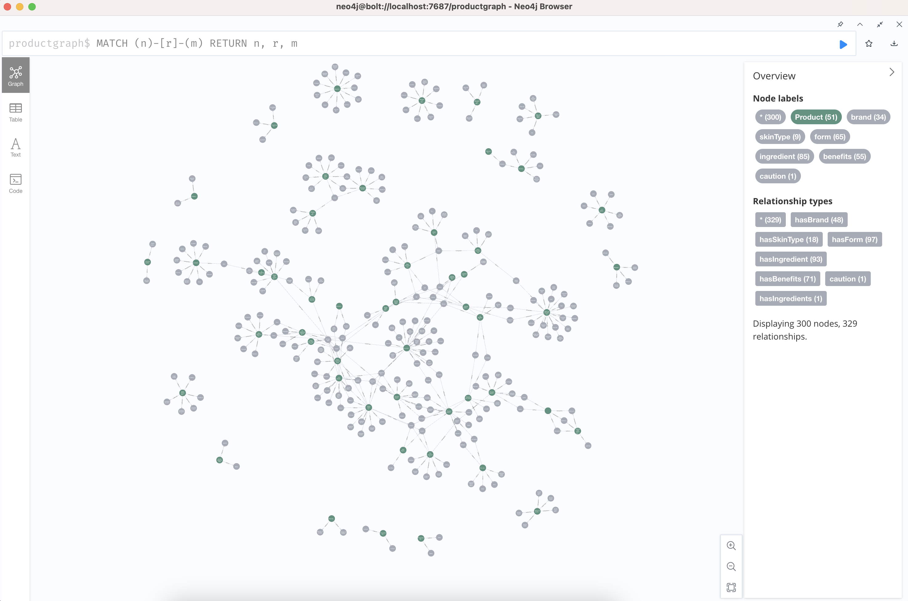
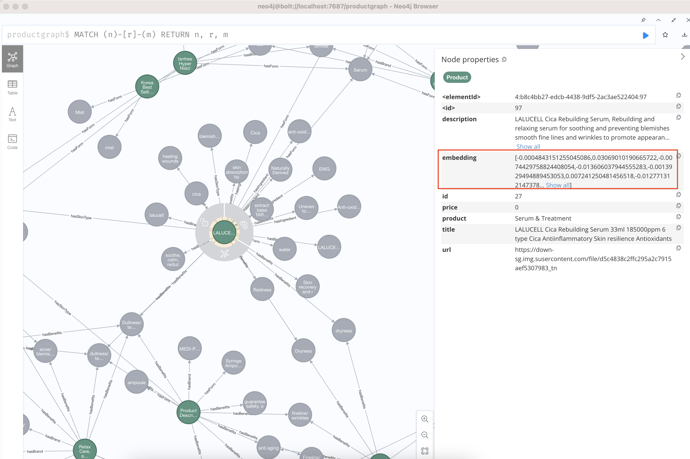
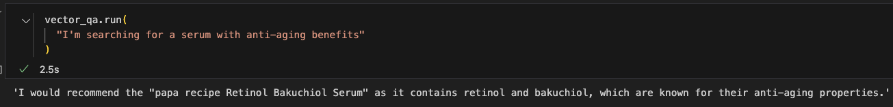
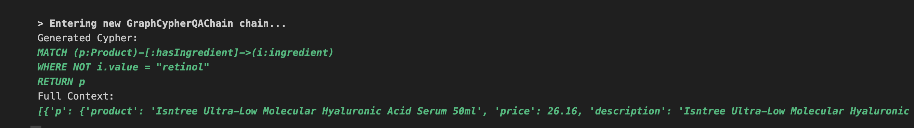
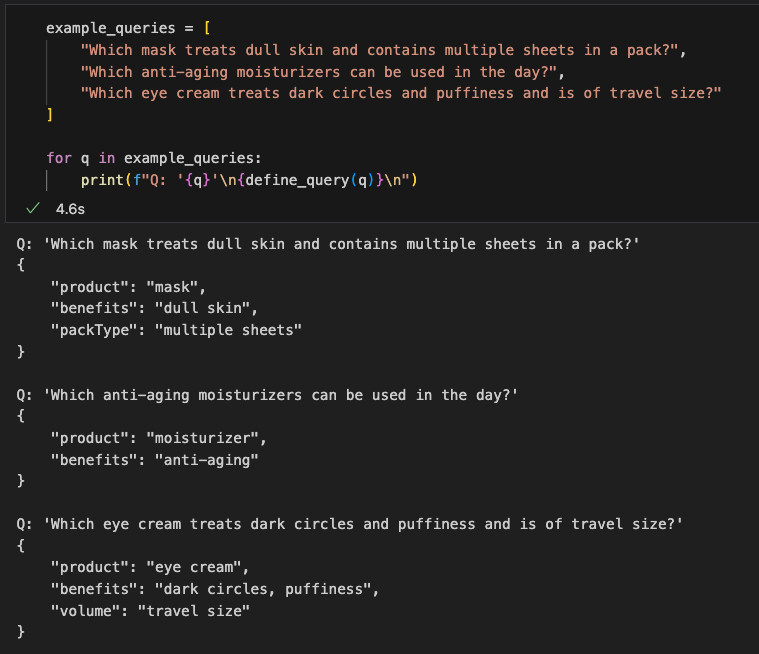
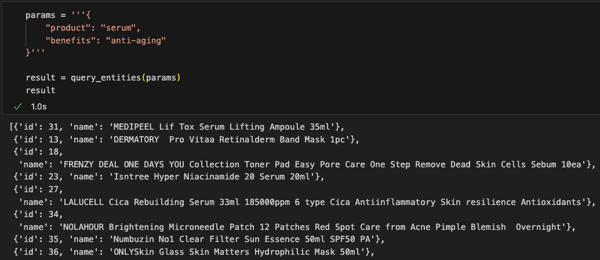
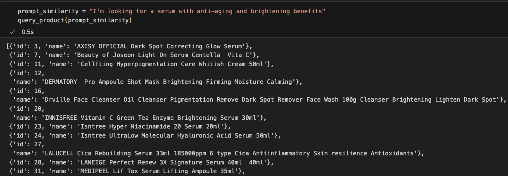
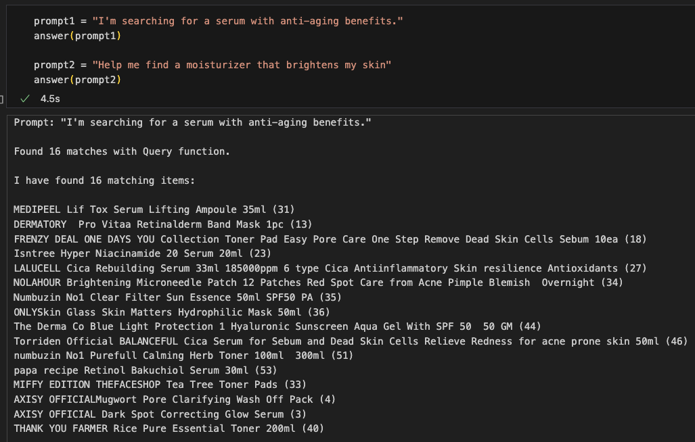

In my previous article, I constructed a knowledge graph (KG) with the help of LLMs. This knowledge graph now becames an external knowledge source for the LLM. We can use this KG, with its structured and unstructured parts, to augment an LLM response.
The structured part represents the Cypher querying from the Neo4j graph database to retrieve the search results. The transformation of a question written in natural language to Cypher is done with the help of a LLM.
The unstructured part represents the entities' embedding values. Entity properties, such as a description, are stored as text embedding values. This transformation can be achieved with LangChain's OpenAIEmbeddings utility.
Retrieval augmentation can be acheived with either the structured or unstructured parts, or a combination of both.
RAG can be implemented with any external knowledge base converted to vector embeddings, but as a graph enthusiast, I thought using a KG to implement a basic RAG application to be an intriguing solution.
Quick start: best primers
I recommend anyone who is reading this article to first read this excellent article by Plaban Nayak. While the main goal of the article is to show how to implement RAG with KG and LlamaIndex, I found the concise summary about KGs and comparison between graph and vector embeddings enlightening.
Next, read Pinecone's tutorial on implementing RAG. The short primer on vector embeddings, limitations of LLM responses and need for RAG is well explained. While you may not use Pinecone as the vector database, the code snippets help you visualize the end-to-end process.
Real-world knowledge graph
The structured product information, most often scraped from the web or through API calls, naturally do not contain relations between the product (source node) and another entity (target node). We have to transform the raw data into a graph structure. This other entity is not necessarily another product, but can be a text or phrase describing the product.
To construct a knowledge graph of skincare products, I scrapped data of skincare products from an e-commerce website, then cleaned and processed the information into the data structure below. I also used an LLM to extract product attributes from unstructured product descriptions. The full code of how I constructed the KG be found here. Below is a snapshot of the KG.
There are two types of nodes in the same list, Product and Entities, which are attributes/properties (such as brand, ingredients, formulation) of each product in their own node.
[{
"product_id": 1,
"product_url": "https://down-sg.img.susercontent.com/file/sg-11134201-22120-gpkz4kwm51kv41_tn",
"product": "Cleanser",
"title": "76 Probiotics Amino Purifying Cleanser x2",
"price": 0,
"volume": 0,
"description": "25 Japanese Amino Acid 51 Probiotics, No Soap No Irritant Gentle Moisturizing Cleanser, Deeply Cleanses Dirt Repairs Moisturizes, Improves Skin Absorption of Skin Care"
},
{
"product_id": 1,
"relationship": "hasBrand",
"entity_type": "brand",
"entity_value": "TRUU"
},
{
"product_id": 1,
"relationship": "hasSkinType",
"entity_type": "skintype",
"entity_value": "all skin type"
},
{
"product_id": 1,
"relationship": "hasForm",
"entity_type": "form",
"entity_value": "Liquid"
},
{
"product_id": 1,
"relationship": "hasIngredient",
"entity_type": "ingredient",
"entity_value": "Probiotics"
}]
Create a Neo4j database, connect to it and ingest the graph data into it.
Creating vector indexes in Neo4j
Embedding is the process of encoding any data type (documents, video, audio, images, etc) as a vector. A vector is represented as an array of numerical values. The embedding value is stored as a property within the same node. We can verify this by checking the node properties in Neo4j after embedding is done on a subset of properties.
While all properties can technically be emdedded, only properties whose values are long texts, such as a title or description, makes more sense to be embedded. Furthermore, only a subset of entities in the graph may be selected to have their properties embedded.
Create embeddings for all source nodes: the products
from langchain.vectorstores.neo4j_vector import Neo4jVector
from langchain.embeddings.openai import OpenAIEmbeddings
embeddings_model = "text-embedding-ada-002"
vector_index = Neo4jVector.from_existing_graph(
OpenAIEmbeddings(model=embeddings_model),
url=url,
username=username,
password=password,
index_name='products', # name of the vector index
node_label="Product", # node label of relevant nodes
text_node_properties=['name', 'title'], # properties to be used to calculate embeddings and retrieve from the vector index
embedding_node_property='embedding', # which property to store the embedding values to
)
Create embeddings for all target nodes: product descriptions broken down into short phrases
def embed_entities(entity_type):
vector_index = Neo4jVector.from_existing_graph(
OpenAIEmbeddings(model=embeddings_model),
url=url,
username=username,
password=password,
index_name=entity_type,
node_label=entity_type,
text_node_properties=['value'],
embedding_node_property='embedding',
)
entities_list = df['entity_type'].unique()
for t in entities_list:
embed_entities(t)
The purpose of embeddings is to implement a vector index search for finding relevant items by their properties closely related to a user query. The retrieved information from the vector index can then be used as context to the LLM, or it can be returned as it is to the end user.
Querying the vector indexes
This is a standard snippet of code found in most LangChain Chatbot tutorials. It is a chain for question-answering against an index. However, the search results may not contain any relevant information about my own skincare products data. We will have to do a more 'fine-tuned' similarity search utilizing the Knowledge Graph, which will be explained in the next section.
from langchain.chains import RetrievalQA
from langchain.chat_models import ChatOpenAI
vector_qa = RetrievalQA.from_chain_type(
llm=ChatOpenAI(), chain_type="stuff", retriever=vector_index.as_retriever()
)
Output
Querying Neo4j database
"LangChain has added Cypher Search" by Tomaz Bratanic
"LangChain Cypher search: Tips & Tricks" by Tomaz Bratanic
Traditional graph database search
A traditional search of the database (ie. graph traversal) is recommended to be done alongside vector index search. By creating a Cypher query, we can find similar products based on common characteristics of products we specify.
A products or list of products is the input to this search, to filter for similar products.
Generating Cypher queries with an LLM
Using GraphCypherQAChain, we can generate queries against the database using Natural Language, prompting for a list of recommended products based on given descriptions or information. While a really cool functionality, it is error prone, particularly so with less powerful LLM models like gpt 3.5, as tried and tested.
from langchain.chains import GraphCypherQAChain
from langchain.chat_models import ChatOpenAI
chain = GraphCypherQAChain.from_llm(
ChatOpenAI(temperature=0), graph=graph, verbose=True,
)
chain.run("""
Help me find a moisturizer that does not contain retinol
""")
Output
It is only finding a product that does not contain the ingredient called retinol, but not products that are moisturizers. Running this same query again may not generate any result.
Creating LLM-generated prompts
Instead of converting the user query directly into Cypher, utilize an LLM to help convert it to an object of key-value pairs that best encapsulates the query based on a limited set of labels / types with an LLM, then use the object to construct the Cypher query with a Python function Having a good grasp of Cypher is still relevant!
system_prompt = f'''
You are a helpful agent designed to fetch information from a graph database.
The graph database links products to the following entity types:
{json.dumps(entity_types)}
Each link has one of the following relationships:
{json.dumps(relation_types)}
Depending on the user prompt, determine if it possible to answer with the graph database.
The graph database can match products with multiple relationships to several entities.
Example user input:
"Which anti-aging moisturizers contain retinol"
There are three relationships to analyse:
1. The mention of moisturizers means we will search for a product similar to "moisturizer"
2. The mention of retinol means we will search for an ingredient that is "retinol"
3. The mention of anti-aging means we will search for benefits that are "anti-aging"
Return a json object following the following rules:
For each relationship to analyse, add a key value pair with the key being an exact match for one of the entity types provided, and the value being the value relevant to the user query.
For the example provided, the expected output would be:
{{
"product": "moisturizer",
"ingredient": "retinol",
"benefits": "anti-aging"
}}
If there are no relevant entities in the user prompt, return an empty json object.
'''
from openai import OpenAI
client = OpenAI()
# Define the entities to look for
def define_query(prompt, model="gpt-3.5-turbo"):
completion = client.chat.completions.create(
model=model,
temperature=0,
messages=[
{
"role": "system",
"content": system_prompt
},
{
"role": "user",
"content": prompt
}
]
)
return completion.choices[0].message.content
Output
In my opinion, I feel such method works best in certain contexts, such as a product recommendation system, where we know users are asking questions to find products. We most likely expect users to provide details describing the ideal products they have in mind through their needs. If the context is around a Q&A about a person or event, users may probe with general queries that is difficult to provide labels for.
Querying the database with LLM-generated prompts
The entities extracted for the prompt might not be an exact match with the data we have, so we will use the GDS cosine similarity function to return products that have relationships with entities similar to what the user is asking. The threshold defines how closely related words should be. Adjust the threshold to return more or less results.
def create_query(text, threshold=0.81):
query_data = json.loads(text)
# Creating embeddings
embeddings_data = []
for key, val in query_data.items():
if key != 'product':
embeddings_data.append(f"${key}Embedding AS {key}Embedding")
query = "WITH " + ",\n".join(e for e in embeddings_data)
# Matching products to each entity
query += "\nMATCH (p:Product)\nMATCH "
match_data = []
for key, val in query_data.items():
if key != 'product':
relationship = entity_relationship_match[key]
match_data.append(f"(p)-[:{relationship}]->({key}Var:{key})")
query += ",\n".join(e for e in match_data)
similarity_data = []
for key, val in query_data.items():
if key != 'product':
similarity_data.append(f"gds.similarity.cosine({key}Var.embedding, ${key}Embedding) > {threshold}")
query += "\nWHERE "
query += " AND ".join(e for e in similarity_data)
query += "\nRETURN p"
return query
Create a function to embed the the values of entities in the prompt.
def create_embedding(text):
result = client.embeddings.create(model=embeddings_model, input=text)
return result.data[0].embedding
Now, we will query for similar products based on the LLM-generated object of entities. Because we are finding similarity to multiple product properties, looking at the returned product titles alone is not enough to verify the search results. We have to reference the full list of product and entities.
def query_entities(response):
embeddingsParams = {}
query = create_query(response)
query_data = json.loads(response)
for key, val in query_data.items():
embeddingsParams[f"{key}Embedding"] = create_embedding(val)
result = graph.query(query, params=embeddingsParams)
similar_items = []
existing_ids = set()
for i in result:
current_id = i['p']['id']
# Check if the current_id is not already in the set
if current_id not in existing_ids:
# Add the item to the list and the id to the set
similar_items.append({
"id": current_id,
"name": i['p']['title']
})
existing_ids.add(current_id)
return similar_items
Output
Next, we will query for similar products based on a given description. Similarity is based on a product title, since that was the only property embedded on a Product node. Hence, it is more convenient to verify the search results. Since we have two types of nodes, Product and Entity, with different set of properties embedded, we have to separate the queries.
def query_product(prompt, threshold=0.8):
matches = []
embedding = create_embedding(prompt)
query = '''
WITH $embedding AS inputEmbedding
MATCH (p:Product)
WHERE gds.similarity.cosine(inputEmbedding, p.embedding) > $threshold
RETURN p
'''
result = graph.query(query, params={'embedding': embedding, 'threshold': threshold})
for r in result:
product_id = r['p']['id']
matches.append({
"id": product_id,
"name":r['p']['title']
})
return matches
Output
Building a Langchain agent
Now, we can stitch together the similarity search components. This may generate made-up responses not relevant to the skincare products dataset I ingested into the graph database. Agent prompt engineering is also an additional complexity. You may view full code of the agent setup here.
from langchain.agents import Tool, AgentExecutor, LLMSingleActionAgent, AgentOutputParser
from langchain.schema import AgentAction, AgentFinish, HumanMessage, SystemMessage
tools = [
Tool(
name="Query",
func=query_entities,
description="Use this tool to find entities in the user prompt that can be used to generate queries"
),
Tool(
name="Similarity Search",
func=query_product,
description="Use this tool to perform a similarity search with the products in the database"
)
]
tool_names = [f"{tool.name}: {tool.description}" for tool in tools]
Output

Non-LLM generated search response
Using an agent did not generate good responses. Let's keep it 'traditional' by running each search component in sequence in a pipeline.
import logging
def answer(prompt, similar_items_limit=10):
print(f'Prompt: "{prompt}"\n')
// Find entities in the user prompt that can be used to generate queries
params = define_query(prompt)
result = query_entities(params)
print(f"Found {len(result)} matches with Query function.\n")
// Perform a similarity search with the products in the database
if len(result) == 0:
result = query_product(prompt)
print(f"Found {len(result)} matches with Similarity search function.\n")
if len(result) == 0:
return "I'm sorry, I did not find a match. Please try again with a little bit more details."
print(f"I have found {len(result)} matching items:\n")
similar_items = []
for r in result:
similar_items.extend(query_similar_items(r['id']))
print(f"{r['name']} ({r['id']})")
print("\n")
if len(similar_items) > 0:
print("Similar items that might interest you:\n")
for i in similar_items[:similar_items_limit]:
print(f"{i['name']} ({i['id']})")
print("\n\n\n")
return result
Output
